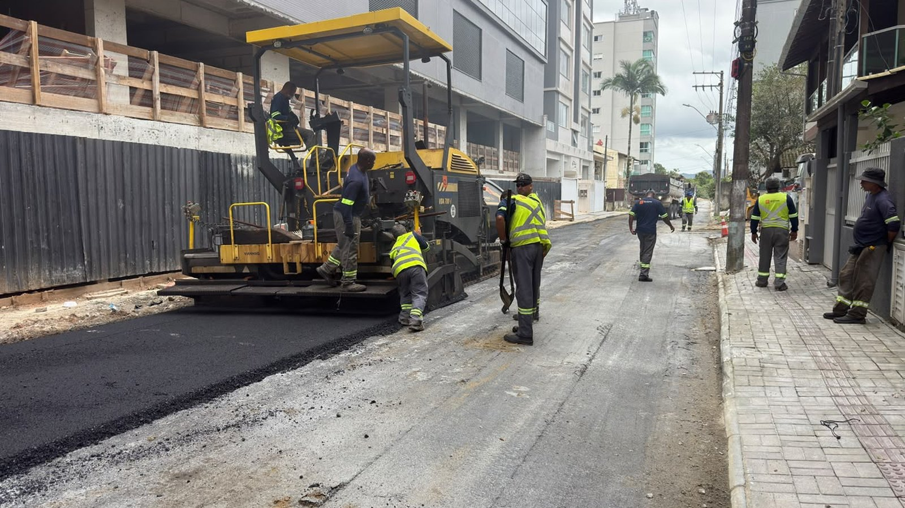
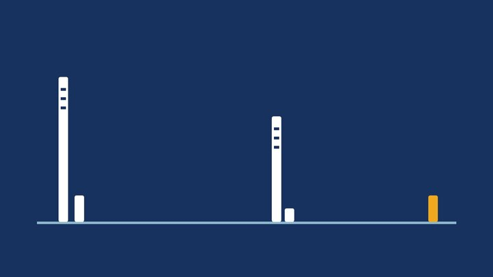

Itapema · Infraestrutura
Itapema · InfraestruturaA Rua 282 voltou à preparação para o asfalto 33 dias depois de a Prefeitura de Itapema anunciar que ela já estava na pavimentação
A matéria da semana passada, que esta continua.
A nota do Avança Itapema desta quinta, 29 de outubro, diz que as equipes aplicam asfalto num trecho da Rua 282. É a primeira vez em dois meses que uma nota do programa põe a rua recebendo massa asfáltica. Em 18 de setembro a mesma Prefeitura já tinha publicado que a via “entra na etapa de pavimentação”, com drenagem, nivelamento e fresagem concluídos: entre uma coisa e outra passaram 41 dias. Reunimos as cinco notas do programa que citam a rua desde 17 de julho. Só a primeira delas diz de qual trecho está falando.
Em 30 segundos · Modo de Leitura, formato original Santa Informa
A Rua 282 está recebendo asfalto.
É a nota do Avança Itapema desta quinta.
Quinta-feira, 29 de outubro.
A nota diz: pavimentação asfáltica de um trecho.
Não diz qual trecho.
Em 18 de setembro a Prefeitura já tinha publicado outra coisa.
Naquele dia a nota foi: a rua “entra na etapa de pavimentação”.
E dizia drenagem, nivelamento e fresagem concluídos.
Entre aquela nota e o asfalto de hoje são 41 dias.
Em 21 de outubro a rua voltou a aparecer na preparação.
Dessa nota para esta são 8 dias.
A rua aparece em cinco notas do programa.
A primeira é de 17 de julho, com drenagem.
São 104 dias da primeira até hoje.
Só a de julho disse o trecho.
Era “entre a 1ª e a 2ª Avenida”.
Em julho a nota punha a rua no Morretes.
Em setembro passou a pôr na Meia Praia.
Teve também um bloqueio da via.
Foi em 16 de setembro, uma quarta.
O aviso falava em pavimentação “em toda a extensão da via”.
De lá para cá são 43 dias.
A nota desta quinta tem doze frentes de trabalho.
A da semana passada tinha oito.
Seis das doze já apareciam na semana passada.
Duas ruas podem receber asfalto na sexta, 30.
São a 434 e a 206.
Depende do tempo, diz a nota.
A Rua 420 está de novo em drenagem.
Em 5 de outubro o secretário disse: “Concluímos toda a drenagem”.
Faz 24 dias.
A Rua 700B1 segue em lajotas.
Está assim desde 16 de setembro.
São 43 dias no mesmo serviço.
O deck da Orla do Centro também segue.
A troca de madeira por pavers começou em 16 de setembro.
Hoje a frente está perto da Rua 165.
O secretário de Obras é Jean do Idimar.
Não falamos com a Secretaria de Obras para esta matéria.
InfraestruturaPublicada em Redação Santa Informa

A Prefeitura de Itapema publicou nesta quinta-feira, 29 de outubro, a lista semanal de obras do Avança Itapema. O primeiro serviço citado é a pavimentação asfáltica de um trecho da Rua 282. É o asfalto saindo de verdade, e ele chega 41 dias depois de a mesma Prefeitura publicar, em 18 de setembro, que a rua tinha entrado “na etapa de pavimentação”, com drenagem, nivelamento e fresagem concluídos. Contamos esse intervalo juntando as notas do próprio programa.
A rua aparece pela primeira vez em 17 de julho, com obra de drenagem pluvial. Aquela nota é a única que diz o pedaço: “entre a 1ª e a 2ª Avenida”, e põe a rua no bairro Morretes. Em 15 de setembro sai o aviso de que a via seria bloqueada na quarta, dia 16, para nivelamento e pavimentação “em toda a extensão”. No dia 16, a lista semanal fala em preparação da rua, agora na Meia Praia. Em 18 de setembro vem a nota mais categórica, a da etapa de pavimentação. Depois a rua some das listas por um mês, até 21 de outubro, quando volta como “preparação para a pavimentação”. São 104 dias da primeira nota até o asfalto desta quinta.
A nota de hoje lista doze frentes de trabalho, contra oito na da semana passada. Além da 282, a Rua 416 está em preparo do solo, e as ruas 460B, 460C, 206 e 434 recebem serviços preparatórios. A Rua 700B1 segue em lajotas, a 420 e a 129A em drenagem pluvial, a Marginal Oeste em revisão de drenagem, a 414 em padronização de calçadas, e o deck da Orla do Centro troca madeira por pavers perto da Rua 165. Seis dessas frentes já estavam na lista de 21 de outubro.
A nota traz uma previsão com data: se o tempo ajudar, as ruas 434 e 206 começam a receber asfalto a partir desta sexta-feira, 30 de outubro. É raro o programa marcar dia, então fica fácil conferir na semana que vem. A Rua 206 vem se arrastando: ela aparecia em drenagem em 16 de setembro e em preparação em 21 de outubro.
A Rua 700B1 está em pavimentação de lajotas desde 16 de setembro, ou seja, 43 dias no mesmo serviço, sem nota dizendo que acabou. A troca do deck de madeira por pavers na Orla do Centro começou no mesmo dia, ao lado da Ponte do Suspiro, e hoje está perto da Rua 165. E tem a Rua 420: em 5 de outubro o secretário de Obras, Jean do Idimar, disse numa nota que “concluímos toda a drenagem”. Vinte e quatro dias depois, a 420 aparece em drenagem pluvial outra vez. As notas tratam de trechos, e nenhuma informa qual.
O resumo de 30 segundos está no topo e a versão completa é o texto acima. Aqui ficam as três leituras da casa sobre o mesmo assunto.
Clara, a otimista
Em julho a Rua 282 era um canteiro de drenagem. Nesta quinta tem pavimentadora espalhando massa asfáltica. Entre uma foto e outra tem muito buraco, muita poeira e muito morador reclamando, e isso é verdade em qualquer obra de rua que seja feita direito. Drenagem primeiro, nivelamento depois, fresagem, e só então o asfalto. Pular etapa é o que faz a rua voltar a afundar no verão seguinte.
E a lista desta semana tem doze frentes, não uma. Tem calçada sendo padronizada na 414, drenagem na 129A, lajota na 700B1 e o deck da orla saindo da madeira para o paver. Para quem mora na 434 ou na 206 veio até data: sexta-feira, se o tempo deixar. Rua asfaltada muda o valor do imóvel, muda a chegada do caminhão de entrega e muda a vida de quem empurra carrinho de bebê na chuva.
Seu Prudêncio, o criterioso
Merece atenção a distância entre duas frases da mesma Prefeitura. Em 18 de setembro a nota diz que a Rua 282 “entra na etapa de pavimentação” e dá drenagem, nivelamento e fresagem como concluídos. Em 21 de outubro a rua reaparece “na preparação para a pavimentação”. Quem acompanha pelo site fica sem saber se houve atraso, se choveu, se faltou massa asfáltica ou se simplesmente são trechos diferentes da mesma via. Nenhuma das duas notas diz.
Uma sugestão útil, e barata: cada nota do programa informar o trecho e a extensão em metros. A nota de 17 de julho fez isso, escreveu “entre a 1ª e a 2ª Avenida”, e com uma linha resolveu a dúvida que as quatro notas seguintes deixaram em aberto. O mesmo vale para a Rua 420, dada por concluída em drenagem no dia 5 e de volta à drenagem no dia 29. Vale acompanhar também a previsão desta sexta para as ruas 434 e 206, porque data publicada é compromisso que o leitor pode conferir.
Dito isso, o resultado está na foto e precisa ser reconhecido. A rua saiu da drenagem e chegou ao asfalto, na ordem técnica correta, e a Prefeitura publica a lista toda semana, com nome de rua e tipo de serviço. Município que mostra onde a máquina está trabalhando já faz mais do que muita prefeitura por aí.
Caco, o sarcástico
A Rua 282 fez uma coisa que poucos imóveis de Itapema conseguem: mudou de bairro sem sair do lugar. Em julho era Morretes. Em setembro amanheceu Meia Praia. Nenhuma mudança de endereço, nenhuma mudança de CEP, só a nota resolvendo diferente. Quem mora lá deve ter descoberto o novo bairro pelo site da Prefeitura, igual a todo mundo.
Minha parte preferida é “um trecho”. A nota de hoje diz que o asfalto saiu num trecho da 282 e aí fecha o parágrafo, satisfeita consigo mesma. Trecho é uma palavra generosa. Pode ser trinta metros, pode ser a rua inteira. Eu, que já li as cinco notas, continuo sem saber se o asfalto passou na porta do seu Osmar ou se parou duas quadras antes.
Reclamação registrada. Mas tá bom porque é progresso: em julho aquilo ali era vala aberta e hoje é asfalto quentinho saindo da máquina. Rua que sai da drenagem e chega na capa asfáltica no mesmo ano é motivo de comemorar, mesmo que ninguém saiba exatamente qual pedaço comemorar.
Fontes: A pavimentação asfáltica de um trecho da Rua 282 nesta quinta-feira, o preparo do solo na Rua 416, os trabalhos preparatórios nas ruas 460B, 460C, 206 e 434, a previsão de iniciar o asfalto nas ruas 434 e 206 a partir de sexta-feira caso as condições climáticas sejam favoráveis, a pavimentação em lajotas da Rua 700B1, a drenagem pluvial nas ruas 420 e 129A, a revisão de drenagem na Marginal Oeste no bairro Morretes, a padronização das calçadas na Rua 414, a substituição da estrutura de madeira por pavers no deck da Orla do Centro nas proximidades da Rua 165 e a fala do secretário de Obras e Serviços Públicos Jean do Idimar estão na nota Avança Itapema segue com pavimentação e melhorias de infraestrutura em diferentes bairros, publicada pela Prefeitura de Itapema em 29 de outubro de 2026 e aberta por nós nesta data. A frase “entra na etapa de pavimentação” e a informação de drenagem, nivelamento e fresagem concluídos estão na nota Avança Itapema: Rua 282 entra na etapa de pavimentação, de 18 de setembro de 2026. O bloqueio da via para nivelamento e pavimentação “em toda a extensão” está no aviso Rua 282 será bloqueada nesta quarta-feira (16) para serviços de pavimentação, de 15 de setembro de 2026. A preparação da rua na Meia Praia, a pavimentação em lajotas da Rua 700B1 e o início da retirada do deck de madeira na Orla do Centro, ao lado da Ponte do Suspiro, estão na nota Avança Itapema mantém frentes de obras em diferentes regiões da cidade, de 16 de setembro de 2026. A volta da rua à “preparação para a pavimentação” e a lista de oito frentes da semana passada estão na nota Avança Itapema: obras de pavimentação, drenagem e melhorias na orla seguem em diferentes pontos da cidade, de 21 de outubro de 2026. A primeira aparição da rua, com drenagem pluvial “entre a 1ª e a 2ª Avenida” e no bairro Morretes, está na nota Novas frentes de trabalho do Avança Itapema reforçam melhorias em infraestrutura em diversos bairros, de 17 de julho de 2026. A frase “Concluímos toda a drenagem e agora avançamos com a pavimentação asfáltica”, do mesmo secretário, está na nota Avança Itapema: trechos das ruas 420 e 422 recebem pavimentação asfáltica, de 5 de outubro de 2026. Abrimos as seis notas em 29 de outubro de 2026. A contagem dos 41, 8, 43, 104 e 24 dias, a conferência de quais frentes se repetem de uma semana para a outra e a reunião das cinco notas da Rua 282 numa linha do tempo só são nossas. A foto do topo é da Prefeitura de Itapema, foi publicada junto da nota desta quinta e mostra a aplicação do asfalto na própria Rua 282; recortamos o enquadramento para o formato da página.
Itapema · InfraestruturaA matéria da semana passada, que esta continua.
 Itapema · Infraestrutura
Itapema · InfraestruturaA regra que decide qual rua sem asfalto entra na fila.

Itapema · InfraestruturaOutra obra de rua do mesmo bairro, decidida no papel.